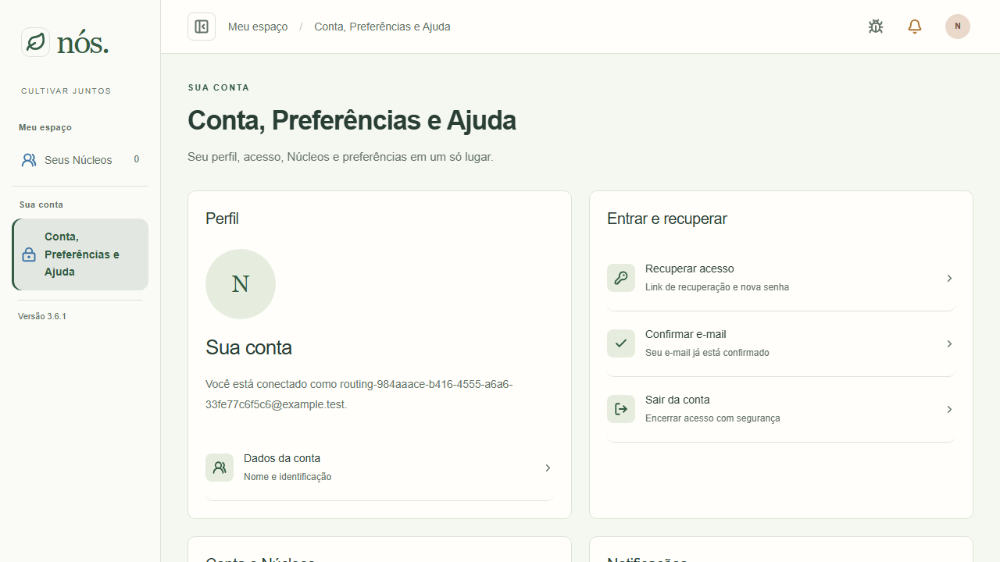
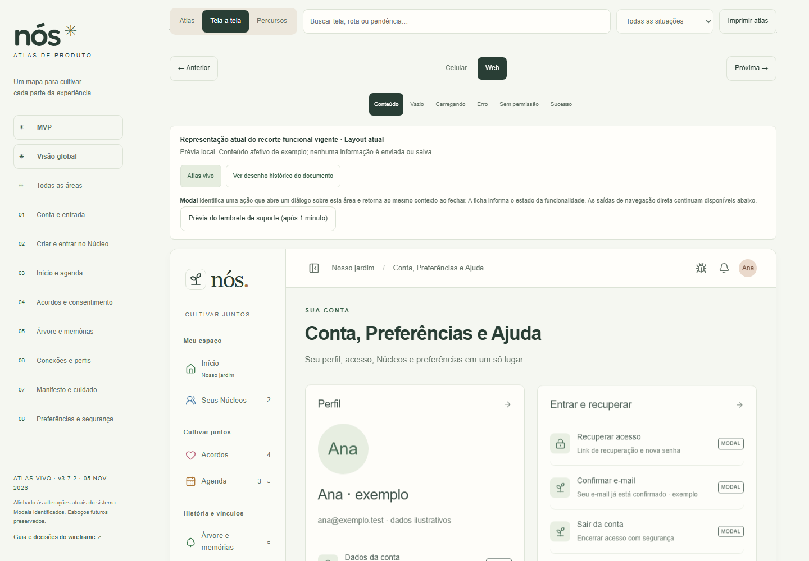
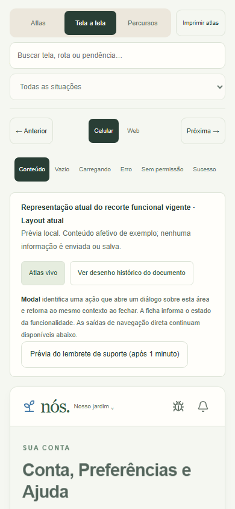
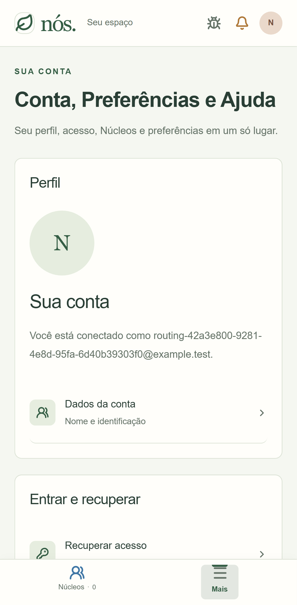
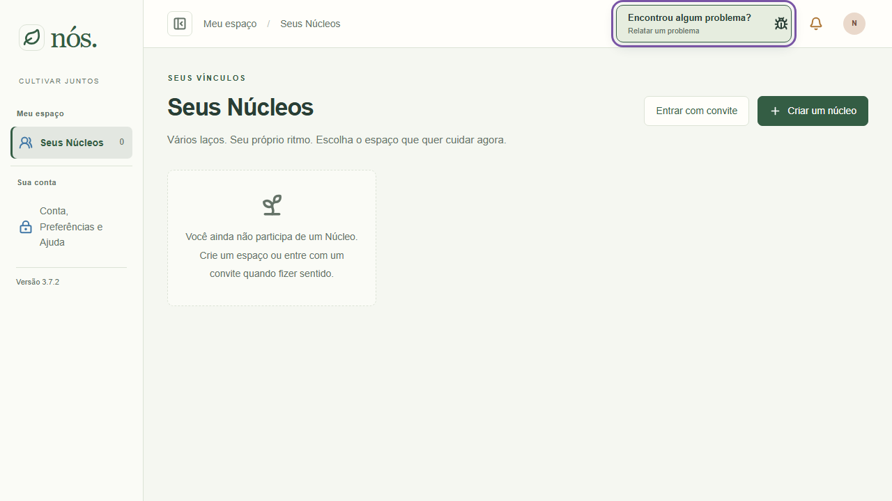
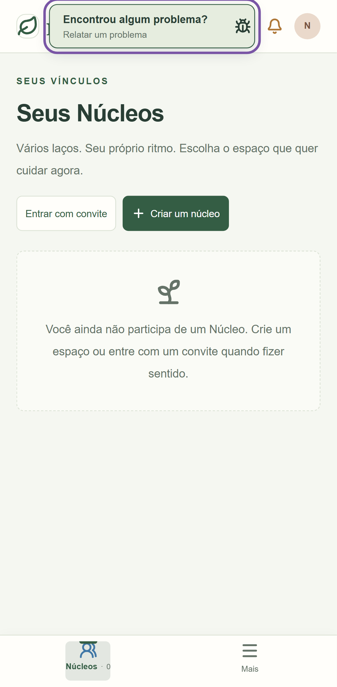
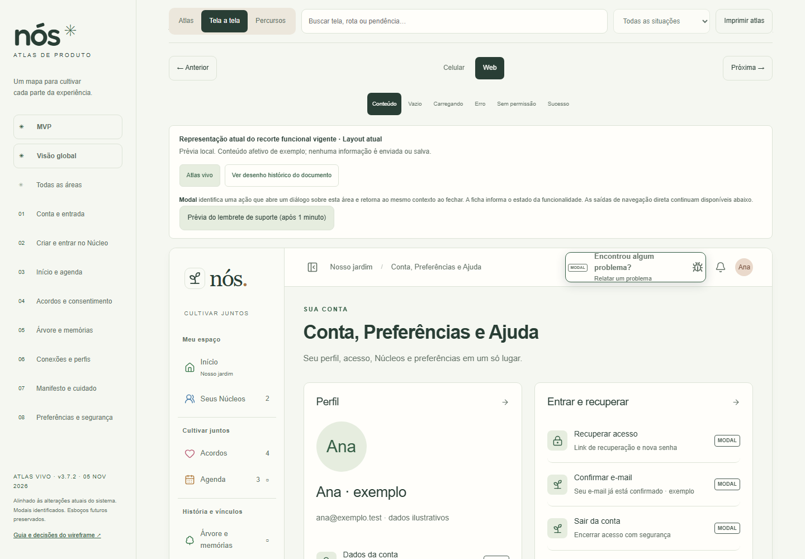
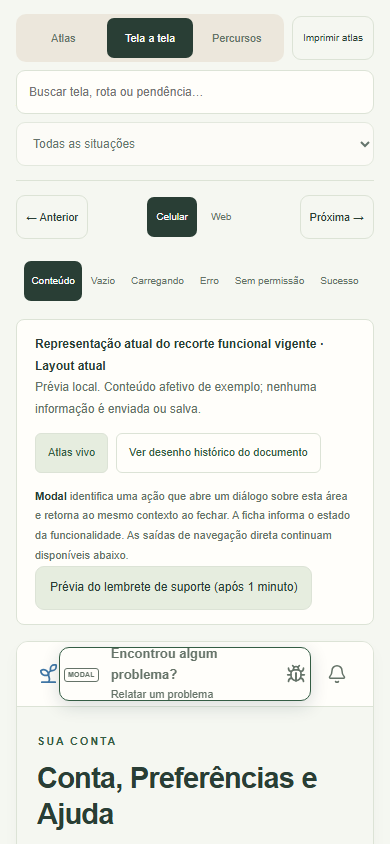
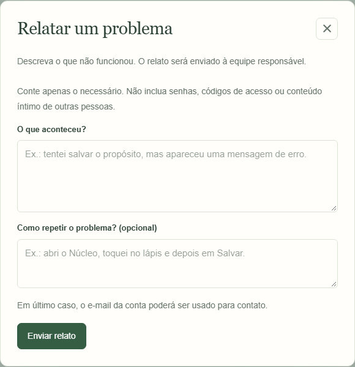
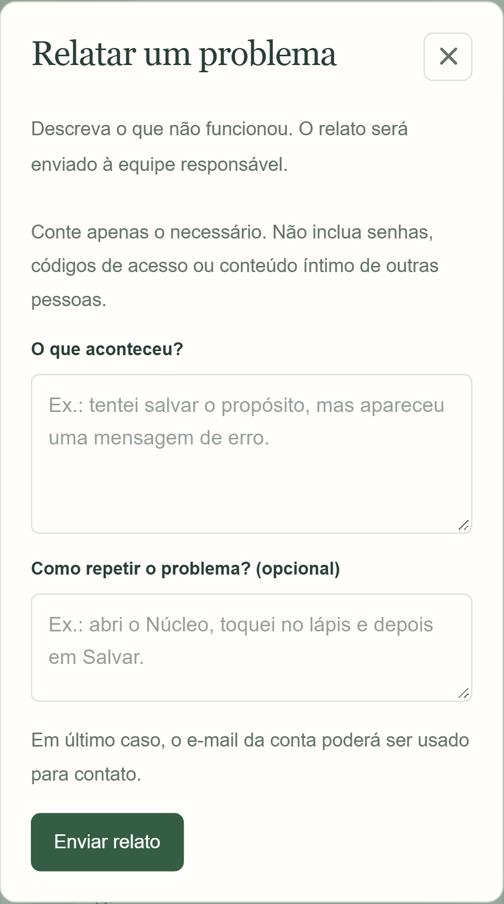
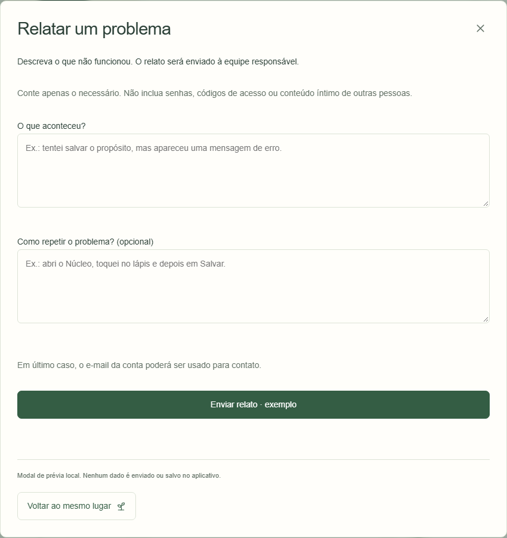
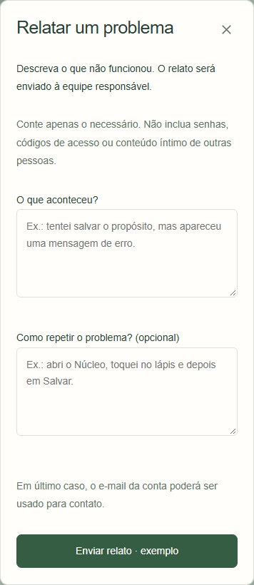
Telas 12, 66 e 70. Aplicativo local e Atlas offline em Chromium, 1440 e 390 pixels. “Antes app desktop” é a composição anterior. As demais capturas antes mostram a versão atual antes do prazo ou da demonstração. O Atlas permite antecipar o primeiro minuto. Os testes usam contas descartáveis e abrem o formulário sem enviar relato.











